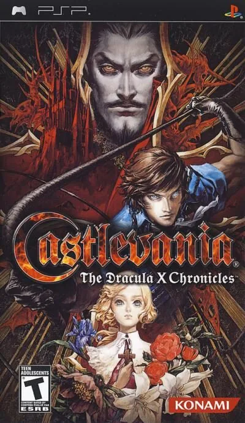

PSP
Castlevania The Dracula X Chronicles
- Año: 2007
- Desarrollador: konami
- Género: Acción
A medida que avanzamos en los niveles, podemos profundizar en ellos, y dándonos cuenta de estos detalles es lo que hace que descubramos que hay prisioneros, como María Renard, que aparece secuestrada por el brujo Shaft al principio del primer nivel en una mazmorra.
Cada personaje liberado, nos otorgará después poder jugarlo en modo historia o modo libre, y así, con los poderes exclusivos de cada uno, poder romper obstáculos que nos permiten obtener mayores objetos.
The Dracula X Chronicles se queda en gran parte igual a Rondo of Blood. Sin embargo, hay adiciones menores y nuevas característica : Dos nuevos obstáculos, una barrera hecha de material de esqueletos rojos y una barrera hecha de hielo son algunas de las novedades que encontraremos a lo largo del juego en versión restaurada.
Para poder destruir estos obstáculos que nos permiten obtener nuevos objetos, hay que salvar a Tera e Iris para poder obtener la habilidad necesaria de cada personaje.
Los rompecabezas para salvar a Iris y Annette han sido modificados.
No salvar a Annette implica forzar al jugador a que combata posteriormente contra la recreación en vampiresa de ella en lugar del fantasma de Shaft en la Fase 7 (Stage 7), que justifica un final malo.
Después de salvar a Annette y vencer al fantasma de Shaft, Drácula se transforma en una tercera criatura que, debe ser derrotada si queremos obtener el final bueno.
Shaft cambia de lugar a una salida alternativa en la Fase 5 (Stage 5) si Annette ha sido salvada.
El quinto escenario luce ahora un aspecto totalmente nuevo y un jefe flamante, la Hidra.
Se han añadido nuevos cuadros de diálogo, y -lugares ya existentes en la anterior entrega, son modificados o extendidos-.
Se han añadido también cutscenes (o escenas entrecortadas) en las peleas contra los jefes finales.
El título de la Fase 8 (Stage 8) se ha renombrado a Bloodlines, título que introduce el nivel en la localización inglesa de Castlevania: Symphony of the Night.
Rondo of Blood es el título oficial en las versiones japonesas originales.
Visto por primera vez en Castlevania: Harmony of Dissonance, se ha añadido el modo Jefe.
El modo contiene las peleas continuadas contra los enemigos finales ya derrotados.
Este modo puede ser jugado de forma cooperativa con un segundo jugador en el modo Ad-Hoc inalámbrico.
Mientras que el Rondo of Blood original tiene ilustraciones estilo anime, The Dracula X Chronicles tiene nuevos diseños de alta calidad del mismo estilo que en Castlevania: Symphony of the Night, de la mano de la diseñadora Ayami Kojima.
Controles
que Richter se mueva con el joystick. Según las guías: Y (□) ataca con el látigo, B (✕) salta, X (△) hace el Item Crash y arriba + Y lanza el arma secundaria; con Richter, B, abajo y B hace la voltereta hacia atrás, y con Maria, B dos veces, el doble salto. ¿Va fluido?
Mando de PSP. El joystick mueve la cruceta y también la palanca analógica, porque muchos juegos de PSP solo se mueven con ella.
| Panel | Juego |
|---|---|
 | ✕ |
 | ○ |
 | R |
 | □ |
 | △ |
 | L |
 | Start |
 | Select |
+  | Salir del juego |
El panel en PSP


Argumento
Recopilado de internet (2026-11-04). Lo marcado con ⚠️ no está probado en la bartop.
Año 1792. El vampiro Drácula ha vuelto a resucitar. Richter Belmont, de 19 años, heredero del látigo Vampire Killer y descendiente de Simon Belmont, va al castillo después de que Shaft, el sirviente de Drácula, rapte a su amada Annette para tenderle una trampa.
Por el castillo, Richter vence a sus secuaces (la Muerte, un caballero sin cabeza, un minotauro…) y puede liberar a otras mujeres raptadas: su pariente Maria Renard, una huérfana de 12 años que insiste en acompañarle; Tera, una monja; Iris, la hija del médico del pueblo; y por último Annette.
Final: Richter vence a Shaft y se enfrenta a Drácula; lo derrota y lo expone a la luz del sol, y el castillo se hunde en el mar mientras Richter huye a caballo. En esta versión, si no se salva a Annette, hay que luchar contra ella convertida en vampira y sale el final malo; si se la salva y se vence al fantasma de Shaft, Drácula tiene una tercera forma nueva, y al vencerla se ve el final bueno.
Jugabilidad
Recopilado de internet (2026-11-04). Lo marcado con ⚠️ no está probado en la bartop.
- Qué es: una nueva versión en 2,5D de Castlevania: Rondo of Blood (1993, PC Engine), con dibujos nuevos de Ayami Kojima y voces en inglés o japonés. Incluye además, para desbloquear, el Rondo of Blood original y Symphony of the Night.
- Estructura: nueve fases con cuatro caminos alternativos: algunas fases tienen más de una salida, y eso cambia la fase siguiente y su jefe (ver «Guía de niveles»).
- Armas: el látigo y un arma secundaria (hacha, daga, biblia, reloj de bolsillo, cruz o agua bendita), que gasta corazones.
- Item Crash: convierte el arma secundaria en un superataque.
- Maria: al rescatarla se puede jugar con ella: más ágil, con doble salto y el doble de daño, pero recibe mucho más; ataca con palomas y animales (gatito tigre, dragoncito, fénix, tortuga…).
- Novedades de esta versión: barreras de esqueletos rojos y de cristal (se rompen con los objetos que dan Tera e Iris), la fase 5 rehecha con un jefe nuevo (la Hidra) y un modo de jefes seguidos (Boss Rush).
Botones según las guías (⚠️ por confirmar)
| Mando de PSP | Panel | Acción |
|---|---|---|
| Cruceta |  | Moverse a los lados |
| Cruceta abajo / arriba |  / /  | Agacharse / subir escaleras cercanas |
| □ | | Atacar con el látigo |
| ✕ | | Saltar (abajo + ✕: bajar de una escalera) |
| △ | | Hacer el Item Crash |
| Arriba + □ | + | Lanzar el arma secundaria |
| ✕, abajo, ✕ | , , | Voltereta hacia atrás (Richter) |
| ✕ ✕ | | Doble salto (Maria) |
| Start | | Empezar · pausar |
Guía de niveles
Recopilado de internet (2026-11-04). Lo marcado con ⚠️ no está probado en la bartop.
| Fase | Nombre |
|---|---|
| 0 | Prólogo |
| 1 | Dinner of Flames |
| 2 / 2' | God, Grant Me Strength / Breaking Through the Front |
| 3 / 3' | An Evil Prayer Summons Darkness / Release from the Thirst for Blood |
| 4 / 4' | Atop Countless Terrors / The Final Divergence |
| 5 / 5' | The Devil Flies by Night / Shudder |
| 6 | Undying Melody |
| 7 | Hear Now the Requiem of Blood |
| Final | Bloodlines (Drácula) |
- Las fases con «'» son las del camino alternativo. Hace falta jugarlas para el 100 % y para rescatar a todas.
- Nombres: los de los capítulos del vídeo, que hace el final bueno.
Objetos
Recopilado de internet (2026-11-04). Lo marcado con ⚠️ no está probado en la bartop.
| Objeto | Qué hace |
|---|---|
| Corazones | Munición del arma secundaria |
| Dinero | Puntos |
| Comida | Recupera vida |
| Armas secundarias | Hacha, daga, biblia, reloj de bolsillo, cruz, agua bendita |
| Objetos de Tera e Iris | Rompen las barreras de esqueletos rojos y de cristal |
Trucos y secretos
Recopilado de internet (2026-11-04). Lo marcado con ⚠️ no está probado en la bartop.
Secretos
- Juegos desbloqueables: el Rondo of Blood original (en inglés, con voces nuevas) y Symphony of the Night, con Maria como personaje jugable (como en Saturn).
- Akumajo Dracula X Peke: un minijuego oculto que en la PC Engine salía si faltaba la tarjeta de sistema.
- Boss Rush: cuatro recorridos con distintos jefes.
- Rescatar a las cuatro (Maria, Tera, Iris y Annette) cambia el juego y el final (ver «Argumento»).
Longplay

Partida completa de la versión PSP (106 min), de Nikoplay, con el final bueno: Castlevania: The Dracula X Chronicles - Full Game (TRUE ENDING), Longplay, 4K HD - No Commentary.
Pulsa el minuto de un nivel para ver el vídeo desde ese punto.
Fases
| Tramo | Fases |
|---|---|
| Primera vuelta | |
| Camino alternativo | |
| Final |